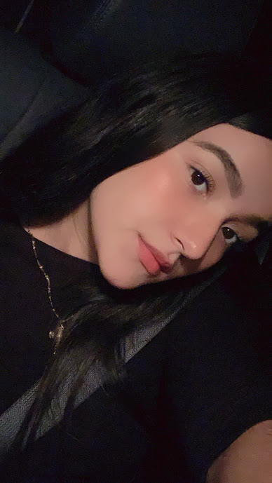

Karla Armenta G.
Actualmente estoy cursando la preparatoria en la cual cada materia es un mundo diferente, estudio en el Colegio Anglo, a punto de pasar a cuarto semestre, esta etapa de mi vida la quiero aprovechar al máximo, ojalá podamos recuperar tantos momentos que perdimos. Dentro de mis pasatiempos favoritos se encuntra el deporte, más enfocado el gymnasio y jugar futbol. Soy fiel creyente de que la tristeza, el estrés, el cansancio, la desolusión también se sudan y es mejor sacarlo que dejarlo en tu cuerpo. Estudiar arquitectura es uno de mis más grandes sueños, todo está en el amor y dedicación que le pongas a las cosas, espero poder superar todos los retos que se me presenten en un futuro.